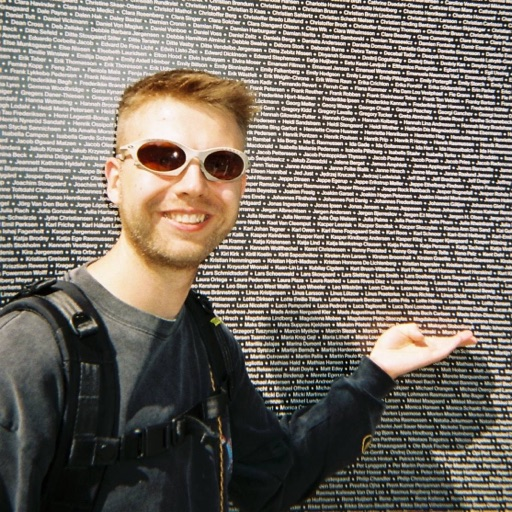

So, what am I signing up for?
TLDR: Athlay is in beta, and I’m looking for a few athletes to use it on their own endurance activities and tell me what feels off or what is missing before it reaches the App Store. Everything you’d probably want to know before saying YES is below.

Hey, I’m Maksym. A software engineer living in Prague, an amateur athlete, and more than a bit passionate about running. Luck isn’t my strong suit. I haven’t won a single race entry ballot, so this year I’ll likely have no races at all 🥲
@running_masloQuestions you might have
What is Athlay?
Athlete’s Overlay, or Athlay for short, is an app that fetches the details of your workout and lets you turn them into scroll-stopping overlays for your socials.
It offers the widest selection of metrics to visualize on the market, so you can share the ones that mattered most for a specific workout.
You can also combine several metrics into a custom sticker and reuse it across many pieces of content, so your posts stand out in the feed and have a recognizable look.
Why are you building Athlay?
At some point I wanted to start sharing my runs with the world, and I couldn’t find a tool flexible enough to do it the way I had in mind. So I decided to build one myself.
Why are you looking for beta users?
Although I run myself and have a clear idea of how this app should look for running, that is still one person’s view. I would rather gather opinions from other runners before it goes out into the wild.
Athlay also targets the three sports of triathlon, and two of them are not mine. Riding and swimming are where I lack experience, and I have a feeling I might get their important aspects wrong, so I want to hear from people to whom those sports are native.
What do you expect from me?
Disclaimer: you are not a bug hunter. I value your time, and my goal is that you run into no bugs at all. If some do find you anyway, I’ll be glad to hear about them.
- Just use it normally, the way you would if you had come across it yourself.
- Figure out whether it actually helps you create content for your socials.
- I’d love to hear when something feels off, or could be done better.
- Same goes for any functionality you expected and didn’t find.
- Along the way I might send you a short questionnaire, one or two over the whole beta. A few minutes each, and answering is entirely up to you.
Thank you.
How do I install it?
Through TestFlight, Apple’s official app for testing apps before they hit the App Store. I’ll send an invite to your email and you’re in within two minutes. There’s a step-by-step walkthrough here.
What do I need to become a beta user?
- An iPhone running iOS 26 or later. Athlay is iPhone-only for now, so it won’t install on an iPad.
- A Strava account. Athlay fetches your activities from Strava, so for the moment that is the only way your workouts get into the app.
What happens to my data?
Your workout data lives on your phone. Athlay pulls it from Strava and renders the overlay on the device, so it is never stored or processed on Athlay’s servers.
What I do keep is the basics of your account, such as your email address, plus anonymous usage analytics that carry no fitness or personal data. Everything is spelled out in the Privacy Policy.
Where do my workouts come from?
From Strava. You connect your account once, Athlay fetches your activities from there, and you pick the one you want to turn into an overlay. For the moment that is the only source.
Not a big fan of Strava? Understandable. I am working on integrating other providers, Garmin among them. Unfortunately Garmin closed API access requests until the end of the year while they revamp it.
How do I report something?
Screenshot inside Athlay, tap the preview in the corner, choose Share Beta Feedback, and your note comes straight to me. You can also email support@athlay.app, or simply DM me back with the issue 🙂
Does the overlay have a watermark?
A watermark is available as one of the overlays, but you are not obliged to use it. Having said that, I would be glad if you helped me spread the word about Athlay.
How will the beta run?
During the beta period I am going to release additional features, both from my roadmap and based on your feedback. They will be grouped and scoped well, so you will not be spammed with new versions daily.
How long does this last, and can I stop?
I plan to release Athlay in the upcoming months, so the beta testing will last from a couple of weeks to a month.
You can quit anytime, just let me know about that 🙂
How do I get my first free year as a beta user?
At this point Athlay has no paywall, but one is coming. Once it is there, I will share a promo code with you.
Still up for it?
Reply to my message with the email tied to your Apple ID, and I’ll send the invite.